Язык программирования С/C++
Язык C/C++ является самым популярным языком программирования. При правильном использовании преимуществ языка на C/C++ можно создавать наиболее быстрые и экономичные по памяти решения.
Цель этого урока - дать вам сведения о языке программирования C/C++ в достаточной мере для решения на нём олимпиадных задач (создания консольных приложений с вводом-выводом при помощи текстовых файлов).
Преимущества и недостатки языка C/C++
Преимущества:
- Скорость работы итоговой программы (по сравнению с Java / Python).
- Прямое управление димамической памятью, что опять же важно для скорости работы.
Недостатки:
- Трудный для понимания синтаксис, который вызывает ошибки. Близкие по обозначению разнонаправленные операции (можно спутать).
- 3 основных операции (присваивание, инкрементация, декрементация) в сочетании с другими операциями предполагает создание сложных для чтения выражений (усложняет диагностику).
- Необходимо очень внимательно работать с указателями, ссылками, динамической памятью, проверять не происходит ли выход за границы массива.
Историческая справка
Язык Си (С) был создан Деннисом Ричи (Ritchie, Dennis M.; р. 1941) в 1973 году в Bell Labs в ходе разработки операционной системы UNIX. Он развивал язык Би (B), который основывался на созданном в Кембриджском университете языке BCPL (от Basic Combined Programming Language), который в свою очередь был потомком Алгола-60.
K&R C
В 1978 году Брайан Керниган и Деннис Ритчи опубликовали первую редакцию книги «Язык программирования Си». Эта книга, известная среди программистов как «K&R», служила многие годы неформальной спецификацией языка. Версию языка Си, описанную в ней, часто называют «K&R C». Вторая редакция этой книги посвящена более позднему стандарту ANSI C.
K&R C часто считают самой главной частью языка, которую должен поддерживать компилятор Си. Многие годы даже после выхода ANSI C, он считался минимальным уровнем, которого следовало придерживаться программистам, желающим добиться от своих программ максимальной переносимости, потому что не все компиляторы тогда поддерживали ANSI C, а хороший код на K&R C был верен и для ANSI C.
Установка интерпретатора MinGW
Официальный сайт: http://www.mingw.org
Установка под Linux: обычно компилятор GNU C/C++ входит в дистрибутив и устанавливается при установке Linux. Установить в любой момент можно командой: sudo apt-get install g++
Установка под Windows:
Скачать на странице http://sourceforge.net/projects/mingw/files/ инсталлятор mingw-get-inst-_версия_.exe и запустить его (он скачает все нужные компоненты с интернета).
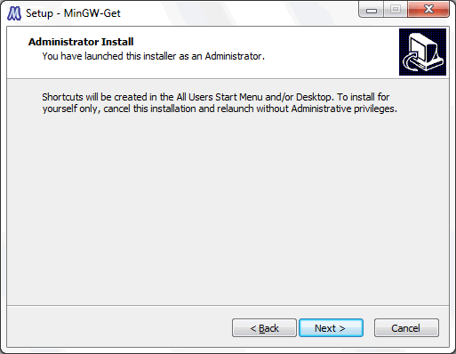
Нажимаем Next >
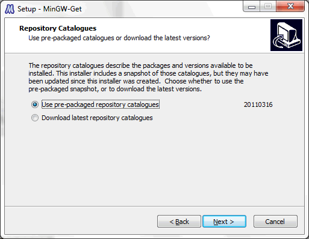
Нам предлагают выбор:
- использовать версию компонент соответствующую этому инсталлятору;
- скачать самую последнюю версию.
Поскольку мы только скачали инсталлятор, разницы нет. Нажимаем Next >
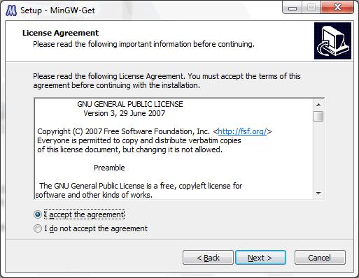
MinGW распространяется под лицензией GNU GPL (GNU General Public License), нам нужно с ней согласиться, чтобы установить MinGW, выбираем "I accept the agreement" (я принимаю соглашение).
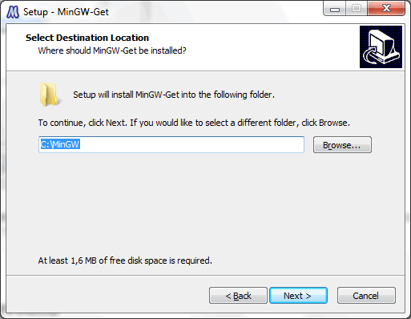
Выбор каталога установки, я оставляю "по-умолчанию" С:\MinGW чтобы не менять пути в различных скриптах. Next >.
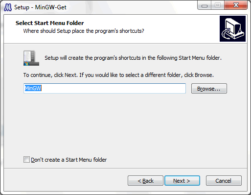
Как назвать ярлык MinGW в кнопке Пуск. Мне трудно представить ситуацию когда нужно менять это значение :) Нажимаем Next >.
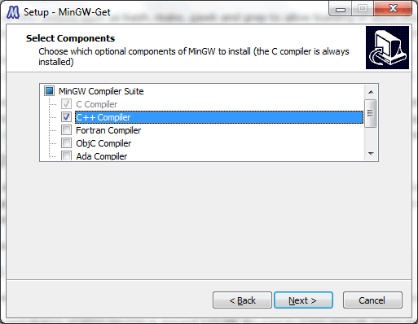
Выбираем компоненты для установки C / C++.
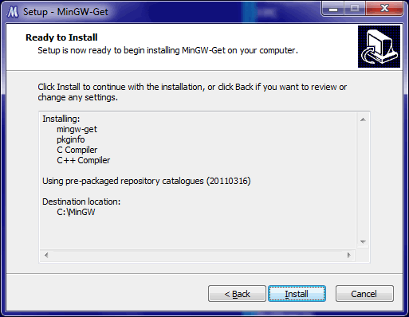
Инсталлятор показывает нам выбранные пакеты. Нажимаем Install, начинают скачиваться пакеты.
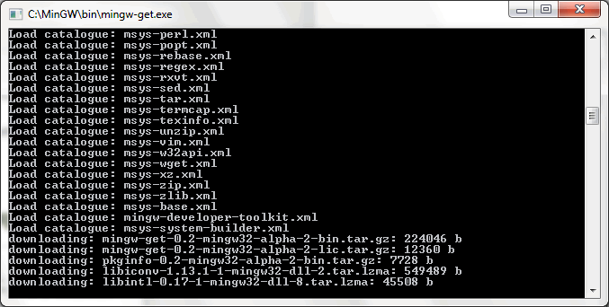
Пакеты скачиваются и устанавливаются.
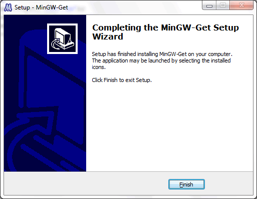
Всё, нажимаем Finish.
Теперь надо добавить в переменную окружения PATH пути к компиляторам C:\MinGW\bin. Для вызова окна со свойствами системы нажмите Win + Pause, выберите "Дополнительные параметры системы".
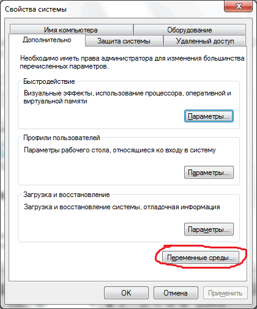
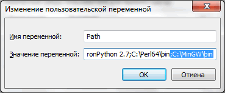
Ввод / вывод при помощи потоков
#include <stdio.h>
#include <iostream> using namespace std; int main(){ freopen("sum.in", "r", stdin); // Ввод из файла вместо клавиатуры freopen("sum.out", "w", stdout); // Вывод в файл вместо экрана long long a,b; // 64-битное целое со знаком cin >> a >> b; cout << (a+b); return 0; // Выход с кодом 0 }
Форматирование до заданного числа знаков:
#include <iostream>
#include <iomanip> using namespace std; int main(){ double x = 3.14159265358; cout << x << endl; // Вывод: 3.14159 cout << setiosflags(ios::fixed) << setprecision(2) << x << endl; // Вывод: 3.14 return 0; }
Типы данных языка C/C++
В С++ имеется набор встроенных типов данных для представления целых и вещественных чисел, символов, а также тип данных “символьный массив”, который служит для хранения символьных строк. Тип char служит для хранения отдельных символов и небольших целых чисел. Он занимает один машинный байт. Типы short, int и long предназначены для представления целых чисел. Эти типы различаются только диапазоном значений, которые могут принимать числа, а конкретные размеры перечисленных типов зависят от реализации. Обычно short занимает половину машинного слова, int – одно слово, long – одно или два слова. В 32-битных системах int и long, как правило, одного размера.
Типы float, double и long double предназначены для чисел с плавающей точкой и различаются точностью представления (количеством значащих разрядов) и диапазоном. Обычно float (одинарная точность) занимает одно машинное слово, double (двойная точность) – два, а long double (расширенная точность) – три. char, short, int и long вместе составляют целые типы, которые, в свою очередь, могут быть знаковыми (signed) и беззнаковыми (unsigned). В знаковых типах самый левый бит служит для хранения знака (0 – плюс, 1 – минус), а оставшиеся биты содержат значение. В беззнаковых типах все биты используются для значения. 8-битовый тип signed char может представлять значения от -128 до 127, а unsigned char – от 0 до 255.
Когда в программе встречается некоторое число, например 1, то это число называется литералом, или литеральной константой. Константой, потому что мы не можем изменить его значение, и литералом, потому что его значение фигурирует в тексте программы. Литерал является неадресуемой величиной: хотя реально он, конечно, хранится в памяти машины, нет никакого способа узнать его адрес. Каждый литерал имеет определенный тип. Так, 0 имеет тип int, 3.14159 – тип double.
Целочисленные типы
- char - 8-битный знаковый тип.
- short - 16-битный знаковый тип.
- int - 32-битный знаковый тип.
- long - 64-битный знаковый тип.
Имена целочисленных типов могут использоваться в сочетании с парой модификаторов типа:
- signed - знаковый.
- unsigned - беззнаковый.
Вещественные типы
- float - 32-битный знаковый тип.
- double - 64-битный знаковый тип.
Логические типы
- bool - принимает два значения - "true" или "false".
Символьные типы
- char - 16-битный Unicode-символ.
Строчные типы
- Строки реализованы как массив символов char[].
Работа с классами
#include <iostream>
#include <conio.h>
using namespace std;
// === Объявление всех классов ===
class Pair {
private: // Метка доступа private - доступно только в пределах класса
int x,y; // Объявили два поля: x и y. Они имеют целый тип (int)
public: // Метка доступа. public - всё что будет перечислено далее открыто для всех
void init(int _x, int _y){
x = _x; y = _y;
}
friend void print(ostream& os,Pair& pair){
os << " (" << pair.x << ", " << pair.y << ") ";
}
friend ostream& operator<<(ostream& os,Pair& pair){
os << " (" << pair.x << ", " << pair.y << ") ";
return os;
}
};
int main(int argc, char* argv[]) {
// Использование класса
Pair p;
p.init(2,3); // Пользуемся методом init для заполнения закрытых полей класса
print(cout,p);
getch();
return 0;
}
Структуры (записи) в C/С++
type
Point = Record
x,y : Integer;
end;
Перечисления в C/C++
#include <iostream>
#include <vector>
using namespace std;
int main(){
vector <int> v;
vector <int> v(количество);
v.push_back([выражение]);
v.resize([количество]);
v.size(); // Возвращает количество элементов в векторе (размер массива)
return 0;
}
enum [имя]
Утверждения - assert
Для C - assert.h, для C++ - cassert.
// Использование утверждений
#include <cassert>
int main(){
// Если утверждение не сработает, то мы получим
// останов программы и сообщение об ошибке
assert( 2 * 2 == 4 );
return 0;
}